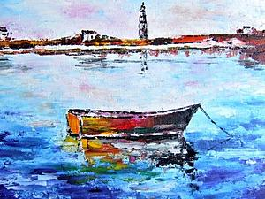
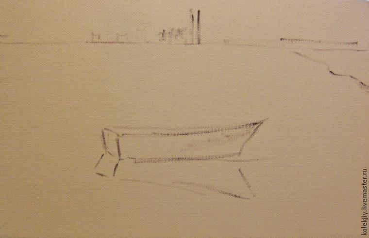
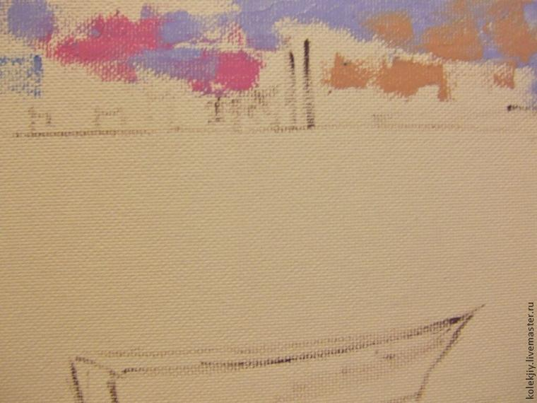
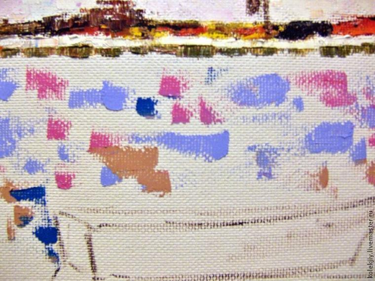
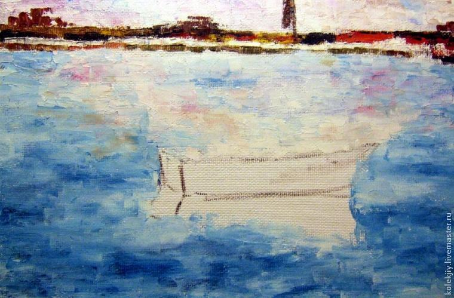
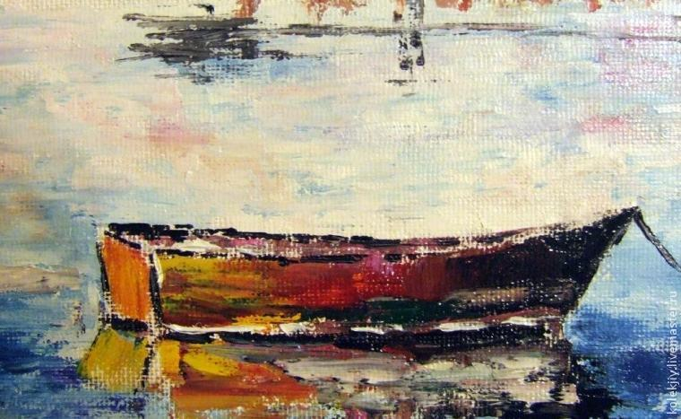
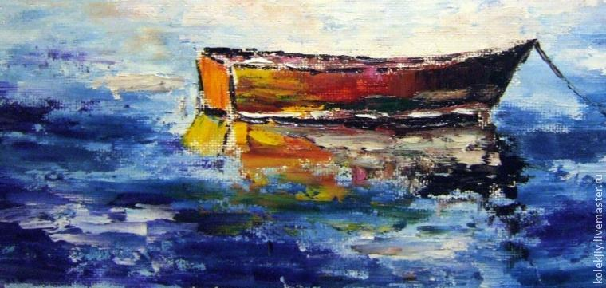
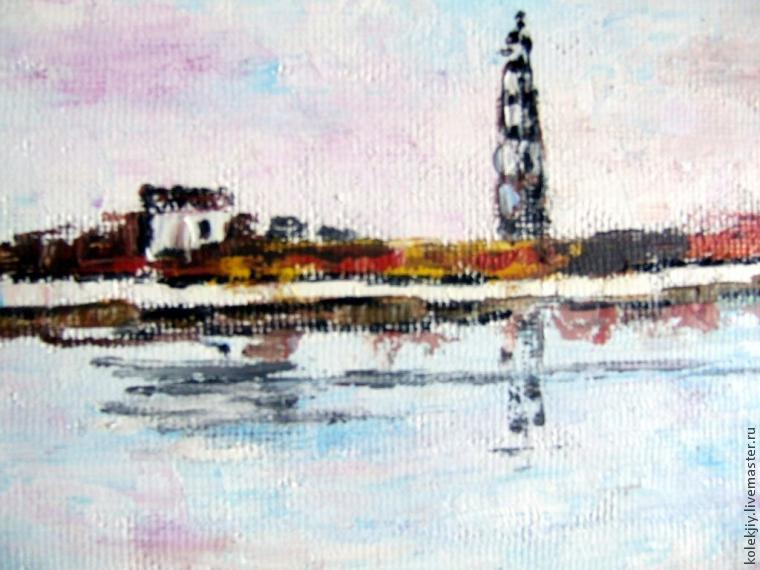
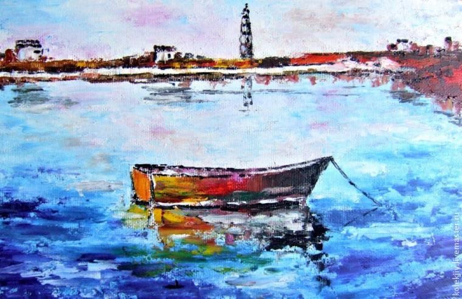

Как нарисовать морской пейзаж мастихином
Данный мастер-класс предназначен прежде всего для людей, которые хотели бы попробовать себя в новом виде творческой деятельности, для тех, кто кто любит краски и хочет получить удовольствие от самого процесса рисования и, конечно, ожидает от своей работы интересный результат.
Основным инструментом сегодня выбираем мастихин. Прекрасный художественный инструмент, который позволяет случаю стать полноправным приемом в нашей работе. Море и небо так изменчивы, что не имеет смысла ждать одинаковой картинки даже несколько минут, отдадим первенство нашему воображению. Будем смешивать краски, экспериментировать, а поможет нам мастихин.
Нам потребуются:
1. масляные краски (синяя, белая, красная, желтая, коричневая, черная). Я намеренно не даю названия красок, используем то, что уже есть. Оттенки получаем путем смешивания красок.
2. холст на подрамнике
3. палитра
4. мастихин
5. салфетки
6. тонкая кисть
Теперь нужно определиться с размером мастихина. При этом необходимо учесть масштаб мазка. Размеры нашей работы небольшие — 25 на 40. Соответственно и инструмент — небольшой.
Шаг 1.
Небольшой кистью сразу на холсте краской темного цвета намечаем основные контуры нашего изображения. Дальний берег, очертания домиков и маяка, лодочку. На лодочку мы смотрим с ближнего берега, который на нашей картине не изображен, но находится очень близко.
Шаг 2.
Начинаем работу красками. Пропишем небо. Возьмем краску на кончик мастихина и маленькими мазками, на отдельные части поверхности холста нанесем цвет. Это наши блики на небе. Все они будут покрыты дымкой. Для этого возьмем белила на всю поверхность мастихина и заполним просветы.
Первоначально положенные густым слоем мазочки мы затем легкими движениями краешком мастихина сгладим.
Слои краски должны быть тонкими и нежными. Объекты выполненные более тонкими слоями отступают вглубь композиции. У нас еще будет возможность положить краски от души густо и пастозно, но на переднем плане. Сейчас мы только любуемся далеким небом.
Шаг 3.
Отдельными мазками, смешивая сразу на холсте темные краски наметим линию берега. Начинаем прорабатывать область моря. Используем те же цвета, которыми прописывали небо. Оно отражается в воде.
Лодочку мы не захватываем.
Линия берега прорисовывается достаточно условно. Человеческое зрение по своей природе менее восприимчиво к деталям удаленных объектов. На большом расстоянии открывается лишь общая форма натуры. Поэтому детали мы прорисовывать не будем.
Сглаживая мазками область моря, мы делаем их по размеру больше, чем на области неба и более густыми. Таким образом мы привлекаем внимание к переднему плану.
Шаг 4.
Работаем с передним планом. Густыми слоями краски покрываем нашу лодочку. Не забываем об отражении.
В нашей лодочке никого нет, она покачивается на волнах у берега. И мы именно с берега смотрим на нее. В отличие от дальнего берега, лодку мы видим хорошо. Возьмем черную краску на ребро мастихина и пропишем четкий контур. Это позволит нам выдвинуть ее вперед.
Лодка привязана к грузу, и мы аккуратно ребром мастихина последовательно нарисуем веревку уходящую в воду и ее отражение.
Еще больше приблизить ее к нам помогут густые мазки синей краски нанесенные крупно. Возьмите краску на всю поверхность мастихина, легко ,не смазывая нижний слой, проведем в нескольких местах по холсту. Лодка находится почти у берега, и вода здесь значительно темнее.
Так же густо нанесем краски белого, желтого, черного цвета. Таким образом мы получим рябь и волнение морской воды.
Шаг 5.
Проработка береговой линии. Маленькой кистью добавим несколько деталей домикам и маяку. Помним, что объекты на заднем плане имеют мелкие и размытые контуры.
Возьмем на кончик мастихина темную краску и обозначим на воде тени от берега. Это совсем расплывчатые контуры маяка, домиков, самого берега.
Отойдите от картины. Внимательно рассмотрите все объекты. Возможно, стоит добавить несколько ярких мазков на переднем плане. Главный объект нашей работы — лодочка — еще больше будет привлекать внимание.
Наша картина готова.
Картина будет достаточно долго сохнуть. Я всегда оставляю законченную работу на виду, для того чтобы понять, все ли мне нравится. Несколько дней у вас будет возможность сделать исправления и добавления. Потом картину убираю и возвращаюсь к ней через некоторое время и вновь стараюсь понять, нужны ли исправления.
Любуйтесь своей работой и получайте удовольствие!








